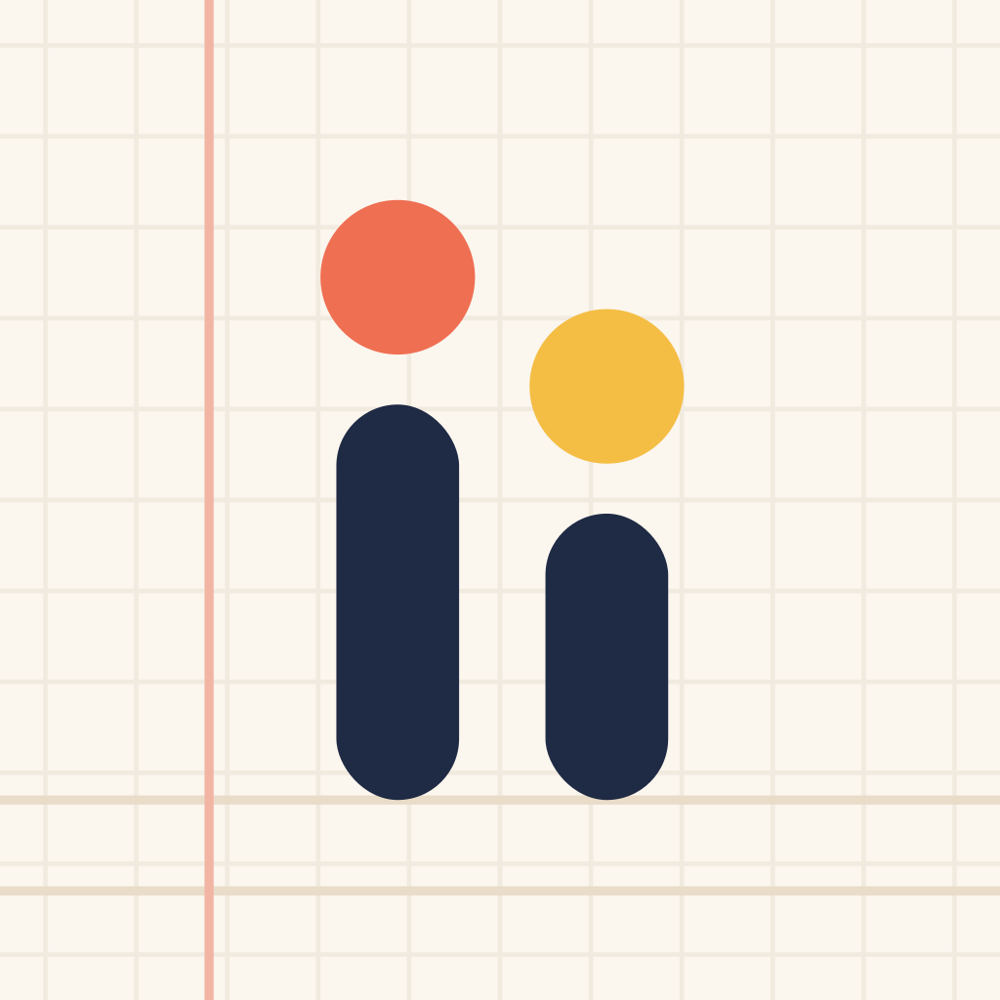

아이아이노트 · 가족이 함께 쓰는 일기장
엄마 · 아빠와 아이가 함께 쓰고 서로 읽어 주는 가족 공유 일기장이에요. 아이의 일기는 AI 다홍펜 선생님이 맞춤법과 띄어쓰기를 봐 주고 칭찬과 응원을 해 줘요.
- AI 맞춤법 선생님 · 초등학생 아이 일기의 맞춤법 · 띄어쓰기를 고쳐 주고, 힌트를 보고 스스로 고치게 도와줘요.
- 받아쓰기 퀴즈 · 자주 틀린 낱말을 빈칸 · OX 퀴즈로 다시 공부해요.
- 매일 일기 습관 · 칭찬 도장 · 하트 · 스티커판 · 연속 기록으로 날마다 쓰는 재미를 붙여요.
- 가족 댓글 · 가족 채팅 · 서로의 일기에 댓글과 답글을 남기고 이야기를 나눠요.
- 성장 기록 · AI 리포트 · 글 길이 변화와 자주 틀린 맞춤법, 선생님 총평으로 커 가는 모습을 봐요.
- 사진 일기 · 일기책 PDF · 사진을 넣어 하루를 남기고, 한 달 일기를 PDF 일기책으로 만들어요.
- 5~7세 이야기 일기 · 아이가 엄마 · 아빠와 나눈 이야기를 녹음하면 아이 말투의 일기로 만들어 줘요.
광고 없음 · 아이는 계정 없이 · 휴대폰 · 아이패드 · 컴퓨터 어디서나 iinote.co.kr
불러오는 중...